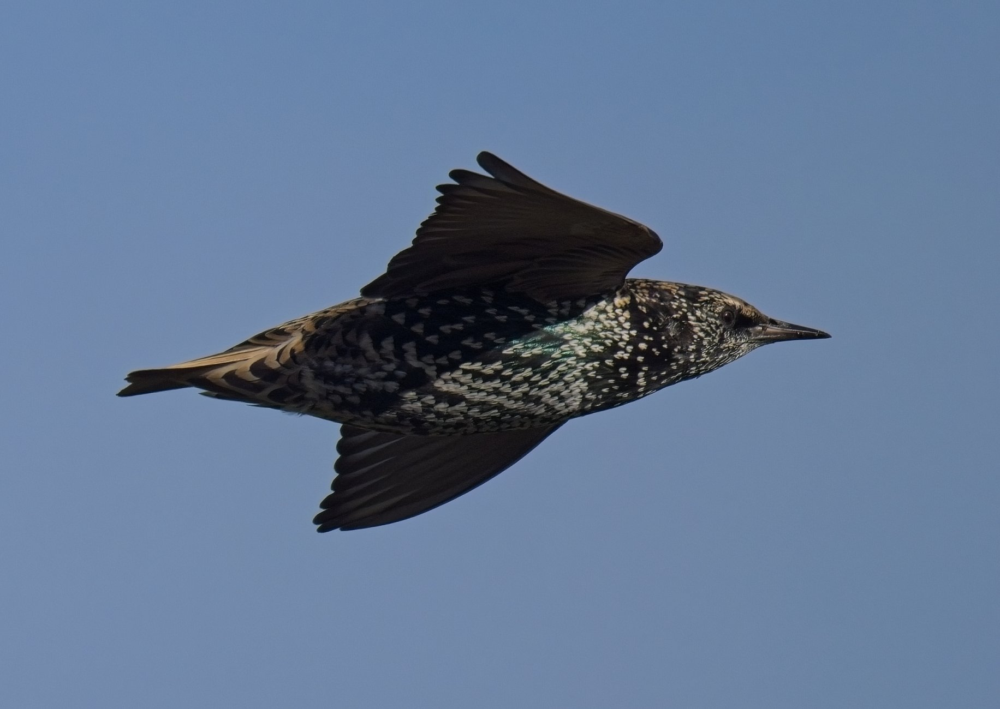

Krishna Prasad Sah
I am a passionate aerospace engineering graduate with hands-on experience in aircraft and UAV design, aerodynamic simulation, structural analysis, and fabrication. My background includes mentoring in ANSYS Fluent/FEA, contributing to the AIAA Design/Build/Fly team, and leading projects such as Blended Wing Body (BWB) aircraft and twin-boom UAVs.
For my Final year thesis, I conducted numerical simulations of hypersonic Fluid-Thermal-Structural Interaction (FTSI) using OpenFOAM, CalculiX, and preCICE. At the IIT Kharagpur Aerodynamics Lab, I optimized bluff body aerospike configurations for drag reduction at Mach 2.43, validating experimental Schlieren visualization with ANSYS Fluent. Currently, I am working on FSI over flexible moving bodies using OpenFOAM, solids4Foam, and preCICE under supervision of Dr. Chandan Bose.
Backed by strong technical expertise in Python (Machine Learning), C/C++, MATLAB, and CAD/CAE platforms (CATIA, Fusion 360, Blender, X-Plane), my passion lies in leveraging data-driven insights to optimize aerospace systems. I aspire to contribute to innovative projects that push technological boundaries. Let's connect and explore the exciting world of aerospace engineering!

Education
B.E. in Aerospace Engineering
Pulchowk Campus, Tribhuvan University
2022 – 2026
High School +2 (Science)
Capital Secondary School (CCRC)
2018 – 2020
Secondary School Certificate (SEE)
Sagarmatha Secondary School
2018
Technical Skills
- Languages: Python, C, MATLAB
- Simulation & CFD: ANSYS (Fluent, Structural, Thermal), OpenFOAM, CalculiX, solids4Foam, preCICE, Simulink, XFLR5, X-Plane
- CAD & Meshing: CATIA, Fusion 360, Blender, Pointwise, Gmsh, Fluent Meshing, Overset Meshing
Research Interests
- Computational Fluid Dynamics (CFD) & Machine Learning
- Fluid-Thermal-Structural Interaction (FTSI)
- Blended Wing Body (BWB) UAV Design
- Hypersonic Flows & Aerodynamics
Experience & Internships
Research Intern
FOSSEE, IIT Bombay | Mar 2026 – Jul 2026
- Implemented a 2-way partitioned FSI solver coupling OpenFOAM, solids4Foam, and preCICE.
- Processed lift coefficient (CL) and displacement signals using spectral FFT analysis to extract vortex shedding frequencies.
Research Intern
Aerodynamics Lab, IIT Kharagpur | Sep 2025 – Dec 2025
- Simulated Mach 2.43 flow over aerospike configurations matching wind tunnel datasets.
- Wrote Python scripts utilizing FFT and Welch PSD to extract shock wave oscillation frequencies from Schlieren video footage.
CFD Researcher
NAST | 2026 – Present
- Built integrated processes converting satellite elevation data into CFD domains for hydrodynamic modeling.
- Simulated flood wave propagation for the Rasuwa river valley flash flood.
Vice-President & Program Coordinator
SOMAES | 2023 – 2026
- Organized the MechTRIX 2081 Design Hackathon.
- Taught a 5-day ANSYS CFD and Static Structural analysis workshop.
Projects & Publications
AIAA SciTech Forum 2027 (Accepted)
Co-First Author | Control ID: 4563686
"Numerical Simulation of Hypersonic Fluid-Thermal-Structural Interaction on a Clamped Thin Panel". Extended NASA's RC-19 benchmark to Mach 6 using OpenFOAM and CalculiX via preCICE.
Starlingλ AeroLabs Initiative
Founder & Lead Aerospace Engineer | Aug 2026 – Present
- Founded an independent initiative focusing on BWB platforms and hybrid VTOLs.
- Built and flight-tested a 2.6m wingspan BWB prototype gathering empirical aerodynamic data.
FSI of Moving Flexible Wings
Advisor: Dr. Chandan Bose | 2026 – Present
Modeling dynamic aeroelastic deformation of flapping flexible wings within a 2-way partitioned FSI solver environment coupling overset grids.
Stealth BWB Aircraft: "Adristastra"
CATIA, OpenVSP, XFLR5 | 2025
Designed a low-observable BWB concept inspired by the B-2 Spirit bomber, targeted for a 15,700 km ferry range.
Honors, Awards & Certifications
Verified credentials and leadership achievements from research institutions and competitive programs.
Hult Prize Semi-Finalist
Team GreenAge | IOE Pulchowk Campus
Recognized for social entrepreneurship and innovative sustainable solution engineering in the OnCampus program.
Research Internships
IIT Bombay & IIT Kharagpur
FSI analysis certification with solids4Foam & preCICE (FOSSEE, IITB) and high-speed aerodynamics aerospike testing (IIT KGP).
Samsung Innovation Campus
6-Month Python & ML Course
Completed intensive training in Python programming, data analytics, and machine learning algorithms.
Mentorship & Workshops
NAST & SOMAES
Certificates of appreciation for mentoring 5-Day ANSYS CFD/FEA workshops and NAST 3-Day UAV Design & Fabrication program.